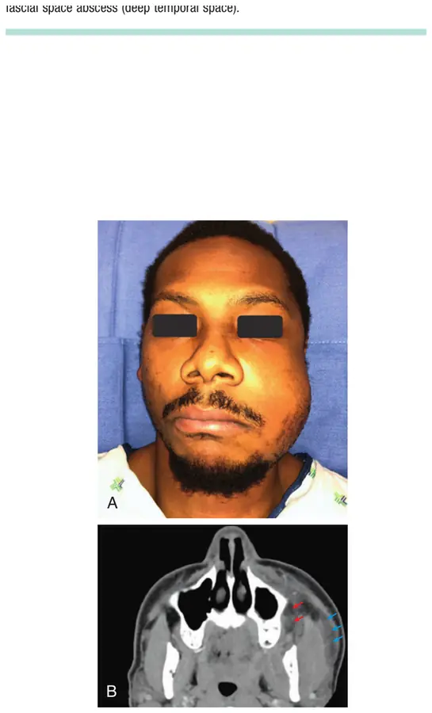

نسخه استخراجشده؛ ترجمه یا تأیید علمی انجام نشده است. وضعیت: captured
«معیارهای ارجاع به جراح دهان و فک و صورت» فهرستی مشخص است. این فهرست را حفظ کن:

دو مورد این فهرست عددیاند و باید دقیقاً حفظ شوند: باز شدن بیندندانی کمتر از ۲۵ میلیمتر، و دمای بالاتر از ۳۸٫۳ درجه. بقیه بالینیاند.
و توجه کن که «شکست درمان پیشین» هم در این فهرست است — یعنی همان چیزی که در اصل اول بهعنوان نشانهی تهاجمی بودن دیدی، اینجا مستقیماً به معیار ارجاع تبدیل میشود.
قاعدهی کلی: عفونتهای اودنتوژنیکی که شدیدند و فضاهای عمیقتر را درگیر میکنند، نیازمند مدیریت سریع بهوسیلهی جراح دهان و فک و صورتاند، معمولاً در محیط بیمارستان. این عفونتها معمولاً با نشانههای نگرانکنندهای مانند تب، اشکال در تنفس و/یا بلع، تریسموس و ریزش بزاق ظاهر میشوند.
و دربارهی راه هوایی، دستور روشن است: اشکال در تنفس، اشکال در بلع، و اشکال در مدیریت ترشحات دهانی، شاخصهای بهخطر افتادن راه هواییاند، و بیمارانی که چنین نشانههایی نشان میدهند باید بیدرنگ به اورژانس بیمارستان محلی منتقل شوند — ایدهآل با مشاورهی یک جراح دهان و فک و صورت.
و در سوی دیگر — آنچه در مطب عمومی قابل انجام است: عفونتهای موضعی مانند آنها که زائدهی آلوئولار و وستیبول را درگیر میکنند، مستعد اعمال جراحی جزئی در محیط مطب دندانپزشکی عمومیاند. و یک مزیت مهم دارند: این عفونتها اغلب اجازهی حذف همزمان منشأ عفونت را میدهند — مثلاً کشیدن یا درمان ریشه.
و یک استثنای آناتومیک که باید بدانی: عفونتهای نزدیک به ساختارهای حیاتی مهم — مانند دستهی عصبی-عروقی چانهای و اینفرااربیتال — عموماً باید بهوسیلهی جراح دهان و فک و صورت مدیریت شوند.
دسترسی جراحی هم تعیینکننده است: تریسموس دسترسی داخلدهانی را میبندد؛ این بیماران معمولاً جراحی تحت بیهوشی عمومی و پایش بیمارستانی میخواهند و باید بیدرنگ ارجاع شوند. و وضعیت دفاع میزبان: بیمار با بیماری زمینهای مؤثر بر دفاع میزبان، مدیریت سریع و تهاجمی بهوسیلهی جراح فک و صورت میخواهد.
پس تصمیم محل درمان بر چهار عامل تکیه دارد: محل (عمق فضا و مجاورت با ساختارهای حیاتی)، شدت، دسترسی جراحی، و وضعیت دفاع میزبان.